alluvial capabilities: a tested tour#
This notebook walks through every public feature of alluvial, the matplotlib port of the
mapequation.org alluvial web app. Each step has a short explanation, a
figure where one helps, and assert checks, so the notebook doubles as an executable specification: if a cell
fails, the behavior it describes has changed.
The sections:
Inputs: dicts,
partitionand DataFrames,.tree/.ftree/.stree/.clu, Infomap JSON,infomap.Infomapobjects (state, memory and multilayer networks,split_layers), the web app’s zip,NetworkFileLayout options: every
LayoutOptionsfieldColoring: the color modes, schemes, tones and offsets, highlight groups and legends
Hierarchy:
module_level,expand, shadows and outlinesDrawing: axes, fonts, labels, palettes, gradients, rasterizing, restyling, saving figures
Geometry access: the layout without matplotlib,
to_dictSave and load:
save_diagram,read, the web appError handling: typical mistakes and their messages
The data are the small files bundled in the repository’s tests/data plus a few seeded Infomap runs, so the whole
notebook runs in well under two minutes. The shorter, story-style introduction is docs/tutorial.ipynb.
import json
import os
import random
import shutil
import subprocess
import sys
import tempfile
import time
import warnings
import zipfile
from itertools import pairwise
from pathlib import Path
import infomap
import matplotlib as mpl
import matplotlib.pyplot as plt
import alluvial
plt.rcParams["figure.dpi"] = 90 # keeps the stored notebook small
def find_data() -> Path:
"The repository's tests/data, found from the working directory (or $ALLUVIAL_DATA)."
if "ALLUVIAL_DATA" in os.environ:
return Path(os.environ["ALLUVIAL_DATA"])
for base in (Path.cwd(), *Path.cwd().parents):
if (base / "tests" / "data" / "multilevel_t0.tree").exists():
return base / "tests" / "data"
raise FileNotFoundError("run the notebook inside the alluvial-py checkout, or set ALLUVIAL_DATA")
DATA = find_data()
OUT = Path(tempfile.mkdtemp(prefix="alluvial-capabilities-")) # everything this notebook writes goes here
def same(a, b) -> bool:
"Two geometries are identical: every coordinate, color index, label and option, bit for bit."
return a.to_dict() == b.to_dict()
LABEL_KEYS = {
"label",
"largest_leaf_names",
"name_candidates",
"name_highlight_indices",
"name_insignificant",
}
def close(a, b, tol=1e-9, labels=True) -> bool:
"Like `same`, but coordinates and flows may differ by float rounding (at most `tol`); optionally skip node labels."
def eq(x, y):
if isinstance(x, float) and isinstance(y, float):
return abs(x - y) <= tol
if isinstance(x, dict) and isinstance(y, dict):
keys = x.keys() if labels else x.keys() - LABEL_KEYS
return x.keys() == y.keys() and all(eq(x[k], y[k]) for k in keys)
if isinstance(x, list) and isinstance(y, list):
return len(x) == len(y) and all(map(eq, x, y))
return x == y
return eq(a.to_dict(), b.to_dict())
assert sorted(alluvial.__all__) == sorted(
[
"SCHEMES",
"AlluvialGeometry",
"HighlightLabel",
"LayoutOptions",
"ModuleInfo",
"NetworkFile",
"NodeInfo",
"__version__",
"draw",
"from_dataframe",
"get_artists",
"layout",
"legend",
"partition",
"plot",
"read",
"save_diagram",
"split_layers",
]
)
The public API is small. layout computes the diagram, draw renders it, and plot does both. read parses
one network, partition and from_dataframe make networks from plain data, and save_diagram writes a diagram
for the web app. The rest are data classes and a few small functions.
1. Inputs#
1.1 Dicts, partition() and DataFrames#
Any partition works, not only Infomap’s: one from another community detection method, from metadata, or written by hand.
A plain dict
{node: module}is one network. A node is an id or a name, and nodes are matched across networks by this key. A module is an int (a top module), a path string"1:2"(sub-module 2 of module 1) or a tuple(1, 2). Module ids start at 1, as in Infomap.alluvial.partition(modules, flows=None, name=None)makes the same network as aNetworkFile. It adds flows (normalized to sum to 1) and a name.A pandas DataFrame in long format, with one row per network and node, goes straight to
layoutorplot. Its columns arenetwork,node,moduleand, optionally,flow.alluvial.from_dataframe(df, network=..., node=..., module=..., flow=...)takes other column names and returns onepartitionper network.
Without flows, every node of a network gets the same flow, 1/N. When no input has flows, module_size and
sort_modules_by default to "nodes", so the modules are sized and sorted by their node counts.
y2020 = {"Ann": 1, "Bo": 1, "Cy": 1, "Di": 2, "Ed": 2, "Flo": 3, "Gus": 3}
y2021 = {"Ann": 1, "Bo": 1, "Cy": 2, "Di": 2, "Ed": 2, "Flo": 2, "Gus": 3}
y2022 = {
"Ann": "1",
"Bo": "1",
"Cy": (1,),
"Di": 2,
"Ed": 2,
"Flo": 2,
"Gus": 2,
} # path strings and tuples work too
partitions = {"2020": y2020, "2021": y2021, "2022": y2022}
counted = alluvial.layout(partitions.values(), names=list(partitions))
print([[(m.id, round(m.flow, 3)) for m in n.modules] for n in counted.networks])
assert (counted.options.module_size, counted.options.sort_modules_by) == (
"nodes",
"nodes",
) # no flows anywhere
assert [m.id for m in counted.networks[2].modules] == [
"2",
"1",
] # sorted by node count, largest at the bottom
seniority = {"Ann": 5, "Bo": 3, "Cy": 1, "Di": 1, "Ed": 1, "Flo": 1, "Gus": 1} # any non-negative weights
nf = alluvial.partition(y2021, seniority, name="2021")
print(nf.name, nf.id, [(n.name, n.id, n.path, round(n.flow, 3)) for n in nf.nodes[:3]])
assert nf.nodes[0].flow == 5 / 13 and abs(sum(n.flow for n in nf.nodes) - 1) < 1e-12 # normalized
weighted = alluvial.layout([alluvial.partition(m, seniority, name=y) for y, m in partitions.items()])
assert (weighted.options.module_size, weighted.options.sort_modules_by) == ("flow", "flow")
fig, axs = plt.subplots(1, 2, figsize=(8, 2.4), layout="constrained")
alluvial.draw(counted, axs[0])
axs[0].set_title("dicts: modules sized by node count", fontsize="medium")
alluvial.draw(weighted, axs[1])
axs[1].set_title("partition(..., flows): sized by flow", fontsize="medium");
[[('1', 0.429), ('2', 0.286), ('3', 0.286)], [('2', 0.571), ('1', 0.286), ('3', 0.143)], [('2', 0.571), ('1', 0.429)]]
2021 2021 [('Ann', 1, '1:1', 0.385), ('Bo', 2, '1:2', 0.231), ('Cy', 3, '2:1', 0.077)]
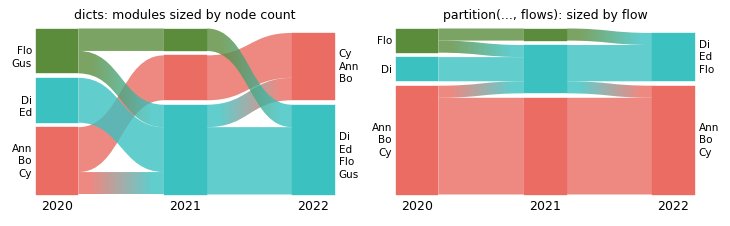
The same networks as a DataFrame, with and without a flow column:
import pandas as pd
df = pd.DataFrame(
[(year, node, module) for year, modules in partitions.items() for node, module in modules.items()],
columns=["network", "node", "module"],
)
print(df.head(3).to_string(index=False))
as_partitions = [alluvial.partition(m, name=y) for y, m in partitions.items()]
assert same(alluvial.layout(df), alluvial.layout(as_partitions)) # one partition per network value
with_flow = df.assign(flow=df["node"].map(seniority)) # a column named "flow" is used as it is
assert same(alluvial.layout(with_flow), weighted)
renamed = with_flow.rename(columns={"network": "year", "node": "who", "module": "group", "flow": "weight"})
networks = alluvial.from_dataframe(renamed, network="year", node="who", module="group", flow="weight")
print([(nf.name, len(nf.nodes)) for nf in networks])
assert same(alluvial.layout(networks), weighted)
network node module
2020 Ann 1
2020 Bo 1
2020 Cy 1
[('2020', 7), ('2021', 7), ('2022', 7)]
1.2 Infomap output files: .tree, .ftree, .stree, .clu#
Infomap’s text outputs are read by their suffix. alluvial.read returns a NetworkFile, which shows what was
read: the format, the nodes with their module paths and flows, and Infomap’s header data. A .tree and an .ftree
of the same run hold the same partition (the .ftree adds the links), so they give the same diagram.
planted = {ext: [DATA / f"planted_t{i}.{ext}" for i in range(3)] for ext in ("tree", "ftree", "clu", "json")}
ML = [DATA / f"multilevel_t{i}.tree" for i in range(3)] # three levels: modules, sub-modules, nodes
nf = alluvial.read(planted["tree"][0])
print(
nf.format,
nf.name,
nf.id,
len(nf.nodes),
"nodes,",
nf.num_top_modules,
"top modules, codelength",
nf.codelength,
)
node = nf.nodes[0]
print("first node:", node.name, node.path, node.flow, node.identifier)
assert nf.format == "tree" and nf.id == "planted_t0" and nf.name == "planted_t0.tree"
assert len(nf.nodes) == 110 and node.path == "1:1"
assert abs(sum(n.flow for n in nf.nodes) - 1) < 1e-6
assert same(
alluvial.layout(planted["tree"]),
alluvial.layout(planted["ftree"], names=[p.name for p in planted["tree"]]),
)
tree planted_t0.tree planted_t0 110 nodes, 4 top modules, codelength 5.48569
first node: v1 1:1 0.00704225 1
A .clu file holds one module per node (no hierarchy), and an .stree (state tree, from -o states or
Infomap’s --output stree) can have insignificant levels, written with ; in the path.
clu = alluvial.read(planted["clu"][0])
stree = alluvial.read(DATA / "debug5_0.stree")
print("clu:", clu.format, clu.num_levels, "level(s);", "stree:", stree.format, stree.num_levels, "levels")
assert clu.format == "clu" and clu.num_levels == 1
assert stree.format == "stree" and stree.num_levels == 3
fig, axs = plt.subplots(1, 3, figsize=(10, 2.6), layout="constrained")
for ax, (title, files) in zip(
axs,
[
(".tree", planted["tree"]),
(".clu", planted["clu"]),
(".stree", [DATA / "debug5_0.stree", DATA / "debug5_1.stree"]),
],
):
alluvial.plot(files, ax=ax, names=[f"t{i}" for i in range(len(files))])
ax.set_title(title, fontsize="medium")
clu: clu 1 level(s); stree: stree 3 levels
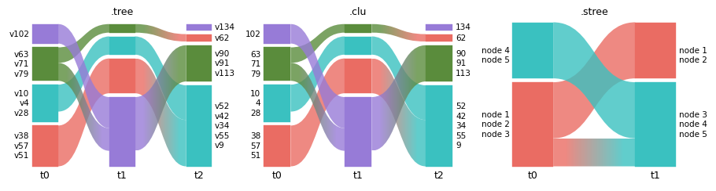
1.3 Infomap JSON#
Infomap’s -o json output works as a path or as the parsed dict. JSON keeps more of Infomap’s data (the
arguments, the codelength savings, the modules list), all of it on the NetworkFile.
with open(planted["json"][0]) as f:
as_dict = json.load(f)
from_path = alluvial.read(planted["json"][0])
from_dict = alluvial.read(as_dict, name="planted_t0.json", network_id="planted_t0")
print(
from_path.format,
from_path.version,
from_path.args,
len(from_path.raw_modules or []),
"modules in the JSON",
)
assert from_path.format == "json" and from_dict.format == "json"
assert [n.path for n in from_path.nodes] == [n.path for n in from_dict.nodes]
assert same(alluvial.layout(planted["json"]), alluvial.layout([as_dict, *planted["json"][1:]], names=[p.name for p in planted["json"]], ids=[p.stem for p in planted["json"]])) # fmt: skip
json v2.15.1 --silent --two-level --num-trials 10 5 modules in the JSON
1.4 infomap.Infomap objects#
An Infomap object that has run can be passed directly, as can the Result that im.run() returns. Here are three snapshots of a planted-partition network: four groups of 12 nodes, where groups C and D merge
in the last snapshot. All runs are seeded.
GROUPS = {"A": range(0, 12), "B": range(12, 24), "C": range(24, 36), "D": range(36, 48)}
NAMES = {u: f"{g}{u - r.start + 1}" for g, r in GROUPS.items() for u in r}
def snapshot(blocks, seed, p_in=0.5, p_out=0.01):
"A random network with dense links inside each block of nodes."
rng = random.Random(seed)
block = {u: b for b, members in enumerate(blocks) for u in members}
return [
(u, v)
for u in NAMES
for v in NAMES
if u < v and rng.random() < (p_in if block[u] == block[v] else p_out)
]
def run(links, **kwargs):
im = infomap.Infomap(silent=True, seed=7, num_trials=5, **kwargs)
im.add_nodes(NAMES.items())
im.add_links(links)
im.run()
return im
A, B, C, D = (list(r) for r in GROUPS.values())
ims = [
run(snapshot([A, B, C, D], seed=1)),
run(snapshot([A, B, C, D], seed=2)),
run(snapshot([A, B, C + D], seed=3)),
]
YEARS = ["2021", "2022", "2023"]
tops = [alluvial.read(im).num_top_modules for im in ims]
print(tops, "top modules")
assert tops == [4, 4, 3]
result = infomap.Infomap(silent=True, seed=7, num_trials=5)
result.add_nodes(NAMES.items())
result.add_links(snapshot([A, B, C, D], seed=1))
result = result.run() # an infomap Result
assert type(result).__name__ == "Result"
assert same(alluvial.layout([result, *ims[1:]]), alluvial.layout(ims))
fig, ax = plt.subplots(figsize=(6, 2.6), layout="constrained")
alluvial.plot(ims, ax=ax, names=YEARS)
[4, 4, 3] top modules
<Axes: >
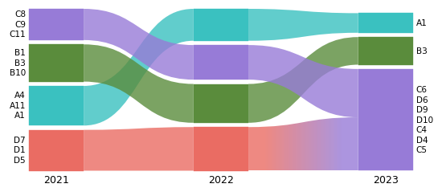
1.5 State and memory networks#
In a state (memory) network, a physical node can have several state nodes, and the state nodes can sit in
different modules: here the physical nodes p6 to p9 (later p3 to p6) take part in both groups X and Y.
read takes the state level by default (states=None picks it for state and multilayer networks). Nodes are
matched across networks by stateId ?? id, and colors="physical_id" colors each physical node wherever its
states go.
def memory_network(shared, seed):
"16 physical nodes in two groups, X (p0-p7) and Y (p8-p15); the `shared` ones have a state node in each group."
rng = random.Random(seed)
im = infomap.Infomap(silent=True, seed=7, num_trials=5)
im.set_names({u: f"p{u}" for u in range(16)})
groups, state = {"X": [], "Y": []}, 0
for u in range(16):
for side in ("X", "Y") if u in shared else ("X" if u < 8 else "Y",):
im.add_state_node(state, u)
groups[side].append(state)
state += 1
for members in groups.values():
im.add_links((s, t) for s in members for t in members if s < t and rng.random() < 0.6)
im.add_link(groups["X"][0], groups["Y"][0])
im.run()
return im
mem = [memory_network(shared=range(6, 10), seed=1), memory_network(shared=range(3, 7), seed=2)]
states = alluvial.read(mem[0])
print(
len(states.nodes),
"state nodes of",
len({n.id for n in states.nodes}),
"physical nodes in",
states.num_top_modules,
"modules",
)
assert states.is_state_network and len(states.nodes) == 20
assert [alluvial.read(im).num_top_modules for im in mem] == [2, 2]
fig, axs = plt.subplots(1, 2, figsize=(8, 2.8), layout="constrained")
alluvial.plot(mem, ax=axs[0], names=["t0", "t1"], colors="similarity")
axs[0].set_title('state nodes, colors="similarity"', fontsize="medium")
alluvial.plot(mem, ax=axs[1], names=["t0", "t1"], colors="physical_id")
axs[1].set_title('colors="physical_id"', fontsize="medium")
20
state nodes of 16 physical nodes in 2 modules
Text(0.5, 1.0, 'colors="physical_id"')
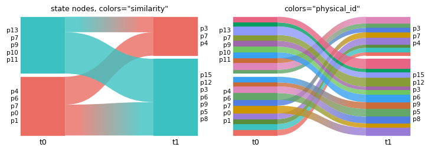
states=False reads the physical level instead (Infomap’s write_tree(states=False)): a physical node in two
modules then appears twice, with one identifier, and read warns that matching across networks uses the last one.
with warnings.catch_warnings(record=True) as caught:
warnings.simplefilter("always")
physical = alluvial.read(mem[0], states=False)
print(len(physical.nodes), "physical nodes;", "warning:", caught[0].message)
assert not physical.is_state_network and len(physical.nodes) == 20
assert "shared by several nodes" in str(caught[0].message)
20 physical nodes; warning: network 'network': 4 identifier(s) are shared by several nodes (e.g. '6', '7', '8'); cross-network matching uses the last node with each identifier
1.6 Multilayer networks and split_layers#
A multilayer network is one Infomap run over all layers. split_layers=True (in layout, or read(..., split_layers=True), which returns one NetworkFile per layer) shows each layer as its own network, as the web
app’s “split layers” does. Split layers match their nodes by physical id. colors="layer" colors the unsplit
network by layer.
ml = infomap.Infomap(silent=True, seed=7, num_trials=5)
ml.set_names(NAMES)
for layer, blocks in enumerate([[A, B, C, D], [A, B, C, D], [A, B, C + D]], start=1):
for u, v in snapshot(blocks, seed=layer):
ml.add_multilayer_intra_link(layer, u, v)
ml.run()
layers = alluvial.read(ml, split_layers=True)
print([(f.id, f.name, f.layer_id) for f in layers])
assert [f.layer_id for f in layers] == [1, 2, 3]
ids = [f"ml_layer{k}" for k in (1, 2, 3)]
assert same(
alluvial.layout(layers, names=YEARS, ids=ids),
alluvial.layout([ml], split_layers=True, names=YEARS, ids=ids),
)
assert len(alluvial.split_layers(alluvial.read(ml))) == 3 # the function behind split_layers=True
fig, axs = plt.subplots(1, 3, figsize=(10, 2.6), layout="constrained", width_ratios=[1, 1, 2.4])
alluvial.plot([ml], ax=axs[0], names=["all layers"])
axs[0].set_title("one network", fontsize="medium")
alluvial.plot([ml], ax=axs[1], names=["all layers"], colors="layer")
axs[1].set_title('colors="layer"', fontsize="medium")
alluvial.plot([ml], ax=axs[2], split_layers=True, names=YEARS)
axs[2].set_title("split_layers=True", fontsize="medium")
[('network_layer1', 'Layer 1', 1), ('network_layer2', 'Layer 2', 2), ('network_layer3', 'Layer 3', 3)]
Text(0.5, 1.0, 'split_layers=True')
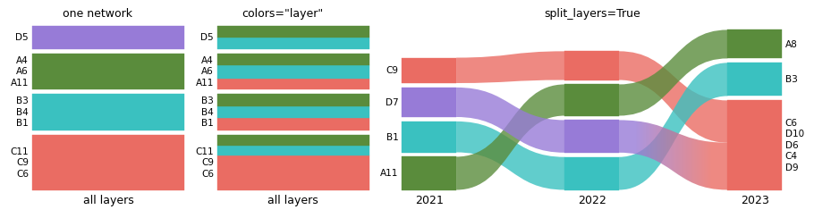
Layer names come from the JSON layers list when it has them (here two of four layers are named).
named = alluvial.read(DATA / "mlayer_named.json", split_layers=True)
print([f.name for f in named])
assert [f.name for f in named] == ["Alpha", "Layer 2", "Gamma", "Layer 4"]
['Alpha', 'Layer 2', 'Gamma', 'Layer 4']
1.7 The web app’s zip, directories and lists of files#
The web app accepts a .zip of network files, and so do read (which returns one NetworkFile per entry) and
layout. A directory or a list of paths also reads as a list.
zip_path = OUT / "planted.zip"
with zipfile.ZipFile(zip_path, "w") as z:
for p in planted["ftree"]:
z.write(p, p.name)
from_zip = alluvial.read(zip_path)
print([f.name for f in from_zip])
assert [f.name for f in from_zip] == [p.name for p in planted["ftree"]]
assert same(alluvial.layout([zip_path]), alluvial.layout(planted["ftree"]))
assert [f.name for f in alluvial.read(planted["ftree"])] == [f.name for f in from_zip] # a list of paths
['planted_t0.ftree', 'planted_t1.ftree', 'planted_t2.ftree']
1.8 NetworkFile, names, ids and identifiers#
Every input becomes a NetworkFile, and layout also accepts NetworkFiles, so you can read once and lay out
many times. names= and ids= set the network names (shown under the networks) and ids (used to address
networks in expand, module_order and module_names). identifier="name" matches nodes across networks by
name instead of id.
files = [alluvial.read(p) for p in planted["tree"]]
assert all(isinstance(f, alluvial.NetworkFile) for f in files)
geom = alluvial.layout(files, names=["first", "second", "third"], ids=["a", "b", "c"])
print([(n.id, n.name) for n in geom.networks])
assert [(n.id, n.name) for n in geom.networks] == [("a", "first"), ("b", "second"), ("c", "third")]
by_name = alluvial.layout(planted["tree"], identifier="name")
assert by_name.networks[0].modules[0].largest_leaf_names # the labels are node names either way
[('a', 'first'), ('b', 'second'), ('c', 'third')]
1.9 Bipartite networks#
Infomap marks the second node type of a bipartite network with bipartiteStartId. show_bipartite_nodes=False
hides those nodes, as the web app’s “Show bipartite nodes” switch does.
bip = [DATA / "bipartite_t0.json", DATA / "bipartite_t1.json"]
shown = alluvial.layout(bip)
hidden = alluvial.layout(bip, show_bipartite_nodes=False)
flow = lambda g: sum(m.flow for m in g.networks[0].modules) # noqa: E731
print(f"visible flow: {flow(shown):.3f} with, {flow(hidden):.3f} without the bipartite nodes")
assert alluvial.read(bip[0]).bipartite_start_id == 5
assert flow(hidden) < flow(shown)
visible flow: 1.000 with, 0.600 without the bipartite nodes
2. Layout options#
LayoutOptions holds the web app’s layout settings with its defaults; pass any field to layout/plot as a
keyword. AlluvialGeometry.options records what was used.
option |
default |
effect |
|---|---|---|
|
600 |
diagram height in layout px |
|
80 |
width of the module columns |
|
2 |
gap between networks, in module widths |
|
1 |
thinner streamlines (px) are not drawn |
|
0.005 |
fraction of each network’s flow hidden, smallest modules first |
|
4 |
margin between modules, |
|
False |
no margins at all |
|
|
|
|
|
module height by |
|
|
module order: |
defaults = alluvial.LayoutOptions()
print(defaults)
assert alluvial.LayoutOptions.from_ts(defaults.to_ts()) == defaults # the web app's camelCase names
print(defaults.to_ts())
g = alluvial.layout(ims)
assert g.options == defaults and g.height == 600
assert all(n.width == 80 for n in g.networks)
gap = g.networks[1].x - (g.networks[0].x + g.networks[0].width)
assert gap == 2 * 80 # streamline_fraction * module_width
g2 = alluvial.layout(ims, height=300, module_width=40, streamline_fraction=4)
assert g2.height == 300 and g2.networks[0].width == 40
assert g2.networks[1].x - (g2.networks[0].x + 40) == 4 * 40
LayoutOptions(height=600.0, module_width=80.0, streamline_fraction=2.0, streamline_threshold=1.0, flow_threshold=0.005, margin_exponent=4.0, zero_margins=False, vertical_align='bottom', module_size='flow', sort_modules_by='flow')
{'height': 600.0, 'moduleWidth': 80.0, 'streamlineFraction': 2.0, 'streamlineThreshold': 1.0, 'flowThreshold': 0.005, 'marginExponent': 4.0, 'zeroMargins': False, 'verticalAlign': 'bottom', 'moduleSize': 'flow', 'sortModulesBy': 'flow'}
Margins, alignment, module size and sort order, side by side:
variants = {
"defaults": {},
"margin_exponent=6": {"margin_exponent": 6},
"zero_margins=True": {"zero_margins": True},
'vertical_align="justify"': {"vertical_align": "justify"},
'module_size="nodes"': {"module_size": "nodes"},
'sort_modules_by="nodes"': {"sort_modules_by": "nodes"},
}
geoms = {title: alluvial.layout(ims, names=YEARS, **kw) for title, kw in variants.items()}
fig, axs = plt.subplots(2, 3, figsize=(10, 5), layout="constrained")
for ax, (title, g) in zip(axs.flat, geoms.items()):
alluvial.draw(g, ax, module_labels=False)
ax.set_title(title, fontsize="medium")
def column_span(g, i):
ms = g.networks[i].modules
return max(m.y + m.height for m in ms) - min(m.y for m in ms)
def gaps(g, i):
ms = sorted(g.networks[i].modules, key=lambda m: m.y)
return [b.y - (a.y + a.height) for a, b in pairwise(ms)]
# zero margins: the modules of a network touch; justify: every network spans the full height
assert max(gaps(geoms["zero_margins=True"], 0)) < 1e-9
assert max(gaps(geoms["margin_exponent=6"], 0)) > max(gaps(geoms["defaults"], 0))
assert all(abs(column_span(geoms['vertical_align="justify"'], i) - 600) < 1e-9 for i in range(3))
print("largest margin in network 0:", {t: round(max(gaps(g, 0)), 1) for t, g in geoms.items()})
assert geoms['module_size="nodes"'].options.module_size == "nodes"
largest margin in network 0: {'defaults': 16.0, 'margin_exponent=6': 40.0, 'zero_margins=True': 0.0, 'vertical_align="justify"': 16.0, 'module_size="nodes"': 16.0, 'sort_modules_by="nodes"': 16.0}
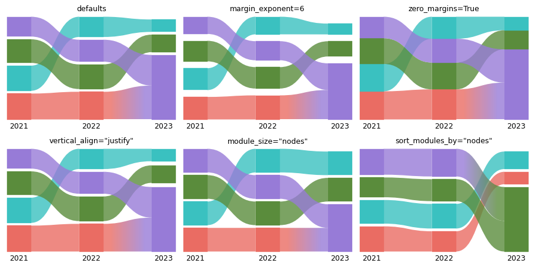
flow_threshold hides the smallest modules until the hidden flow would exceed that fraction of the network’s
flow; streamline_threshold drops thin streamlines (in px). sort_modules_by="node_id" (the mean node id) and
"highlight_index" (the color) give stable, reproducible orders.
few = alluvial.layout(ML, module_level=2)
fewer = alluvial.layout(ML, module_level=2, flow_threshold=0.2)
count = lambda g: sum(len(n.modules) for n in g.networks) # noqa: E731
print(count(few), "modules at flow_threshold=0.005,", count(fewer), "at 0.2")
assert count(fewer) < count(few)
thin = alluvial.layout(ML, module_level=2, streamline_threshold=0)
thick = alluvial.layout(ML, module_level=2, streamline_threshold=5)
print(len(thin.streamlines), "streamlines at streamline_threshold=0,", len(thick.streamlines), "at 5 px")
assert len(thick.streamlines) < len(thin.streamlines)
assert min(s.avg_height for s in thick.streamlines) > 5
for key in ("node_id", "highlight_index"):
g = alluvial.layout(ims, sort_modules_by=key)
assert g.options.sort_modules_by == key
34 modules at flow_threshold=0.005, 25 at 0.2
30 streamlines at streamline_threshold=0, 29 at 5 px
3. Coloring#
3.1 Color modes#
colors= runs one of the web app’s coloring operations after the build:
"module_id"(default): by module id, so the same id has the same color in every network,"similarity": matching modules across networks share a color,"nodes": every node by its module in one network,color_network(the first one by default),"hierarchy": sub-modules get colors close to their parent’s (section 3.3),"layer"and"physical_id": multilayer and state networks (shown in section 1),None: no coloring (gray, unless the input carries colors).
Each module’s color is an index into geometry.palette (-1 is gray), in ModuleGeometry.highlight_index.
modes = ["module_id", "similarity", "nodes", None]
fig, axs = plt.subplots(2, 2, figsize=(8, 4.6), layout="constrained")
by_mode = {}
for ax, colors in zip(axs.flat, modes):
by_mode[colors] = g = alluvial.layout(ims, names=YEARS, colors=colors)
alluvial.draw(g, ax)
ax.set_title(f"colors={colors!r}", fontsize="medium")
used = {m.highlight_index for n in g.networks for m in n.modules}
assert (used == {-1}) == (colors is None), colors
assert same(alluvial.layout(ims, names=YEARS), by_mode["module_id"]) # the default
def module_colors(g):
"{(network index, module id): color} of the visible modules."
return {(n.index, m.id): g.palette[m.highlight_index] for n in g.networks for m in n.modules}
by_id = module_colors(by_mode["module_id"])
assert all(by_id[i, m] == by_id[0, m] for i, m in by_id if (0, m) in by_id) # one color per module id
assert by_id != module_colors(by_mode["similarity"]) # 2023 numbers its merged module C + D as module 1
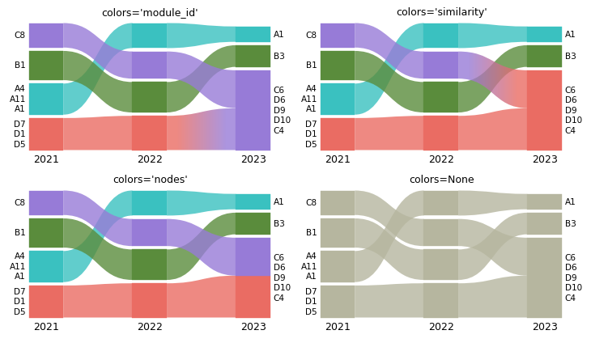
color_network picks the network whose modules color the nodes, as selecting a network does in the web app: an
index, a network id, or a name given with names=. Coloring by the first network shows where each module goes;
coloring by the last shows where each module came from.
last = alluvial.layout(ims, names=YEARS, colors="nodes", color_network="2023")
assert same(last, alluvial.layout(ims, names=YEARS, colors="nodes", color_network=2)) # by index
assert same(last, alluvial.layout(ims, names=YEARS, colors="nodes", color_network="net2")) # by network id
assert same(
by_mode["nodes"], alluvial.layout(ims, names=YEARS, colors="nodes", color_network=0)
) # the default
for g, k in ((by_mode["nodes"], 0), (last, 2)): # every module of the color network has a color of its own
indices = [{grp.highlight_index for grp in m.groups} for m in g.networks[k].modules]
assert all(len(s) == 1 for s in indices) and len(set.union(*indices)) == len(indices)
fig, axs = plt.subplots(1, 2, figsize=(8, 2.4), layout="constrained")
for ax, (title, g) in zip(axs, [('colors="nodes"', by_mode["nodes"]), ('color_network="2023"', last)]):
alluvial.draw(g, ax)
ax.set_title(title, fontsize="medium")
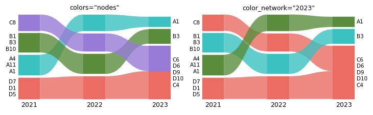
3.2 Color schemes#
scheme= picks one of the web app’s 65 schemes, or takes your own list of colors. alluvial.SCHEMES is a tuple
of their names. Module colors are categories, so pick a categorical scheme: the C3 schemes, "Tableau10",
"Category10", "Paired", "Set2" and the like. The sequential and diverging schemes in the list are there for
the web app’s sake; their colors are hard to tell apart. geometry.palette holds the colors the coloring took
from the scheme.
print(len(alluvial.SCHEMES), "schemes, e.g.", alluvial.SCHEMES[:6])
assert (
isinstance(alluvial.SCHEMES, tuple) and len(alluvial.SCHEMES) == 65 and "C3 Sinebow" in alluvial.SCHEMES
)
paired = alluvial.layout(ims, scheme="Paired")
brewer = tuple(mpl.colors.to_hex(c) for c in mpl.colormaps["Paired"].colors) # matplotlib has the same scheme
print(len(paired.palette), "colors used:", paired.palette)
assert paired.palette == brewer[: len(paired.palette)] # the colors the coloring took from the scheme
mine = alluvial.layout(ims, scheme=["#1b9e77", "#d95f02", "#7570b3", "#e7298a"])
assert mine.palette[:4] == ("#1b9e77", "#d95f02", "#7570b3", "#e7298a")
fig, axs = plt.subplots(1, 3, figsize=(10, 2.4), layout="constrained")
for ax, (title, g) in zip(
axs, [("C3 Sinebow (default)", alluvial.layout(ims)), ('"Paired"', paired), ("own list", mine)]
):
alluvial.draw(g, ax, module_labels=False, network_labels=False)
ax.set_title(title, fontsize="medium")
65 schemes, e.g. ('Accent', 'Category10', 'Dark2', 'Paired', 'Pastel1', 'Pastel2')
4 colors used: ('#a6cee3', '#1f78b4', '#b2df8a', '#33a02c')
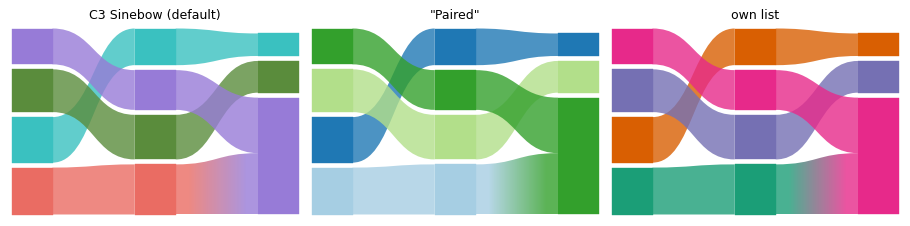
3.3 Tones and offsets#
The C3 schemes ("C3 Sinebow", the default, "C3 Oklch", "C3 Turbo", "C3 Rainbow", …) are computed with
c3, the color library of the web app. Two keywords change them:
tone=sets the lightness and chroma. The tones are"vivid","bright","strong"(the default),"deep","dark","soft","pastel"and"muted".offset=sets where the first color sits, in degrees around the hue source. On"C3 Oklch", it is the hue of the first color (default 245, a blue). On the other C3 schemes, 360 is the whole scheme (default 0).
The other schemes are fixed lists of colors and ignore both.
To get the colors themselves, use c3 (the c3-colors package) directly: c3.palette(n, tone=..., offset=...)
gives the first n colors of "C3 Oklch".
import c3
from matplotlib.colors import to_rgb
print("tones:", list(c3.tones))
assert len(c3.tones) == 8 and "strong" in c3.tones
oklch = {tone: alluvial.layout(ims, scheme="C3 Oklch", tone=tone).palette for tone in c3.tones}
assert all(
list(colors) == c3.palette(len(colors), tone=tone) for tone, colors in oklch.items()
) # c3's colors
assert len({colors[0] for colors in oklch.values()}) == 8 # every tone gives other colors
assert alluvial.layout(ims, scheme="C3 Oklch", offset=245).palette == oklch["strong"] # 245 is the default
turned = alluvial.layout(ims, scheme="C3 Oklch", offset=245 + 90).palette
assert turned != oklch["strong"] and list(turned) == c3.palette(len(turned), offset=245 + 90)
assert (
alluvial.layout(ims, scheme="Paired", tone="pastel", offset=90).palette == paired.palette
) # lists ignore both
fig, axs = plt.subplots(1, 2, figsize=(10, 2.6), layout="constrained")
tones = {tone: c3.palette(16, tone=tone) for tone in c3.tones}
offsets = {f"{o:+d}°": c3.palette(16, offset=245 + o) for o in (0, 30, 60, 90, 180)}
panels = [('"C3 Oklch", every tone', tones), ('"C3 Oklch", "strong", offset 245 + ...', offsets)]
for ax, (title, rows) in zip(axs, panels):
ax.imshow([[to_rgb(c) for c in colors] for colors in rows.values()], aspect="auto")
ax.set_yticks(range(len(rows)), list(rows))
ax.set_xticks([])
ax.set_title(title, fontsize="medium")
tones: ['vivid', 'bright', 'strong', 'deep', 'dark', 'soft', 'pastel', 'muted']
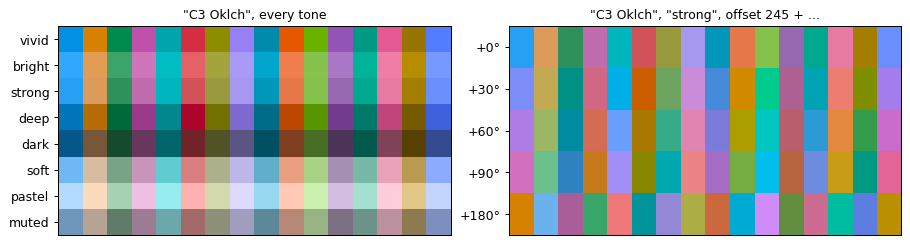
colors="hierarchy" colors the modules by their place in the module hierarchy, with c3’s hierarchy(), as the
web app’s coloring by module hierarchy does:
sub-modules get colors close to their parent’s,
the same module path gets the same color in every network,
with a C3 scheme, the top modules take its colors in the given tone and offset,
with a list of colors, such as
"Tableau10"or your own, the top modules take the colors of the list.
cases = {
'"C3 Oklch", "pastel"': dict(scheme="C3 Oklch", tone="pastel"),
'"C3 Oklch", "deep", offset 120': dict(scheme="C3 Oklch", tone="deep", offset=120),
'colors="hierarchy"': dict(colors="hierarchy", module_level=2),
'colors="hierarchy", "Tableau10"': dict(colors="hierarchy", module_level=2, scheme="Tableau10"),
}
fig, axs = plt.subplots(2, 2, figsize=(9, 5), layout="constrained")
geoms = {}
for ax, (title, kw) in zip(axs.flat, cases.items()):
geoms[title] = g = alluvial.layout(ML, names=YEARS, **kw)
alluvial.draw(g, ax, module_labels=False)
ax.set_title(title, fontsize="medium")
assert geoms['"C3 Oklch", "pastel"'].palette[0] in oklch["pastel"]
assert geoms['colors="hierarchy", "Tableau10"'].palette != geoms['colors="hierarchy"'].palette
for title in ('colors="hierarchy"', 'colors="hierarchy", "Tableau10"'):
g = geoms[title]
by_path = {}
for n in g.networks:
for m in n.modules:
assert m.highlight_index >= 0, (m.id, m.level, m.highlight_index)
by_path.setdefault(m.path, set()).add(g.palette[m.highlight_index])
assert all(len(c) == 1 for c in by_path.values()) # one color per module path in every network
print(title, len(by_path), "module paths,", len(g.palette), "colors")
colors="hierarchy" 15 module paths, 15 colors
colors="hierarchy", "Tableau10" 15 module paths, 15 colors
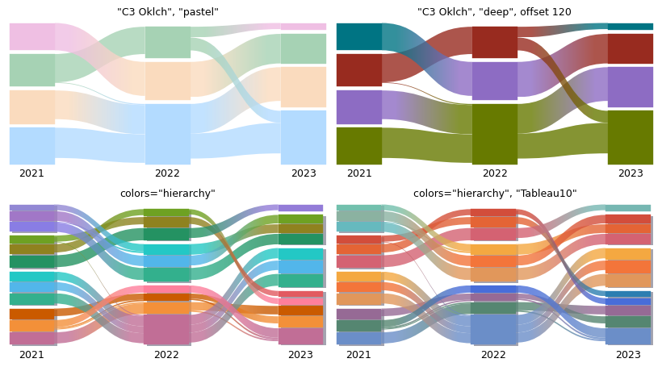
save_diagram stores the scheme, tone and offset (colorScheme, colorTone, colorOffset in the alluvial
block), and a reload restores them as the web app does: the saved colors come back, and coloring again uses the
saved tone and offset. A tone or offset you pass wins, and another scheme drops the saved offset.
kw = dict(names=YEARS, scheme="C3 Oklch", tone="soft", offset=12.5, colors="hierarchy", module_level=2)
original = alluvial.layout(ML, **kw)
saved = alluvial.save_diagram(ML, OUT / "toned.zip", **kw)
with zipfile.ZipFile(saved) as z:
block = json.loads(z.read(z.namelist()[0]))["alluvial"]["diagram"]
print({k: block[k] for k in ("colorScheme", "colorTone", "colorOffset")})
assert (block["colorScheme"], block["colorTone"], block["colorOffset"]) == ("C3 Oklch", "soft", 12.5)
reloaded = alluvial.read(saved)
assert alluvial.layout(reloaded).palette == original.palette # the saved colors
again = alluvial.layout(reloaded, colors="hierarchy") # recolored with the restored scheme, tone and offset
assert again.palette == original.palette
pastel = alluvial.layout(reloaded, colors="hierarchy", tone="pastel") # a tone you pass wins
assert pastel.palette != original.palette
other = alluvial.layout(
reloaded, colors="hierarchy", scheme="C3 Turbo"
) # another scheme drops the saved offset
assert (
other.palette
== alluvial.layout(ML, colors="hierarchy", module_level=2, scheme="C3 Turbo", tone="soft").palette
)
print("saved:", original.palette[:4], 'with tone="pastel":', pastel.palette[:4])
{'colorScheme': 'C3 Oklch', 'colorTone': 'soft', 'colorOffset': 12.5}
saved: ('#dc99b9', '#fc9a77', '#df7e78', '#7ed0e5') with tone="pastel": ('#f1c9dd', '#fbc6aa', '#f8b4b9', '#a3f0ff')
3.4 Highlight groups and legends#
highlight= colors chosen nodes wherever they go and leaves the rest gray: either {label: identifiers}, or a
function of an alluvial.NodeInfo that returns a label (or None). highlight_colors sets the colors (a list
or {label: color}), and legend=True (or alluvial.legend(ax, ...)) adds a legend above the diagram.
groups = {"group A": list(GROUPS["A"]), "group C": list(GROUPS["C"])}
g = alluvial.layout(
ims, names=YEARS, highlight=groups, highlight_colors={"group A": "tab:blue", "group C": "tab:red"}
)
print(g.highlight_labels)
assert [h.label for h in g.highlight_labels] == ["group A", "group C"]
assert isinstance(g.highlight_labels[0], alluvial.HighlightLabel)
def by_group(node: alluvial.NodeInfo):
return f"group {node.name[0]}" if node.name[0] in "BD" else None
g_fn = alluvial.layout(ims, names=YEARS, highlight=by_group)
assert [h.label for h in g_fn.highlight_labels] == ["group B", "group D"]
fig, axs = plt.subplots(1, 2, figsize=(10, 3.2), layout="constrained")
alluvial.draw(g, axs[0], legend=True)
alluvial.draw(g_fn, axs[1])
leg = alluvial.legend(axs[1], other="others", title="callable", frameon=False)
assert [t.get_text() for t in leg.get_texts()] == ["group B", "group D", "others"]
assert alluvial.get_artists(axs[1]).legend is leg
(HighlightLabel(label='group A', highlight_index=0, color='tab:blue'), HighlightLabel(label='group C', highlight_index=1, color='tab:red'))
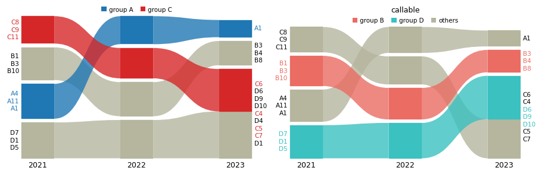
4. Hierarchy#
Infomap finds hierarchies. module_level=2 shows sub-modules down to level 2 (one value, or one per network);
expand=[(network, module_id), ...] opens single modules, in order. Expanded parents are drawn as gray
shadows (default) or solid dark gray outlines (hierarchy="outline"); hierarchy=False hides them.
NetworkGeometry.outlines holds the parent boxes and ModuleGeometry.level each module’s level.
top = alluvial.layout(ML, names=YEARS)
lvl2 = alluvial.layout(ML, names=YEARS, module_level=2)
mixed = alluvial.layout(ML, names=YEARS, module_level=[2, 1, 2])
one = alluvial.layout(ML, names=YEARS, expand=[(0, "1"), ("multilevel_t2", "2")])
assert {m.level for n in top.networks for m in n.modules} == {1}
deepest = lambda g: [max(m.level for m in n.modules) for n in g.networks] # noqa: E731
assert deepest(lvl2) == [2, 2, 2] and deepest(mixed) == [2, 1, 2]
assert [m.id for m in lvl2.networks[2].modules if m.level == 1] == ["4"] # module 4 has no sub-modules
assert [o.path for o in one.networks[0].outlines] == ["1"] and [o.path for o in one.networks[2].outlines] == [
"2"
]
print([m.id for m in one.networks[0].modules])
fig, axs = plt.subplots(2, 2, figsize=(9, 5.4), layout="constrained")
panels = [
('expand=[(0, "1"), ("multilevel_t2", "2")]', one, {}),
('module_level=2, hierarchy_kw={"facecolor": "0.55"}', lvl2, {"hierarchy_kw": {"facecolor": "0.55"}}),
('module_level=2, hierarchy="outline"', lvl2, {"hierarchy": "outline"}),
("module_level=2, hierarchy=False", lvl2, {"hierarchy": False}),
]
for ax, (title, geometry, kw) in zip(axs.flat, panels):
alluvial.draw(geometry, ax, module_labels=False, **kw)
ax.set_title(title, fontsize="medium")
expected = 0 if kw.get("hierarchy") is False else sum(len(n.outlines) for n in geometry.networks)
assert len(alluvial.get_artists(ax).outlines) == expected
['1:1', '1:2', '1:3', '2', '3', '4']
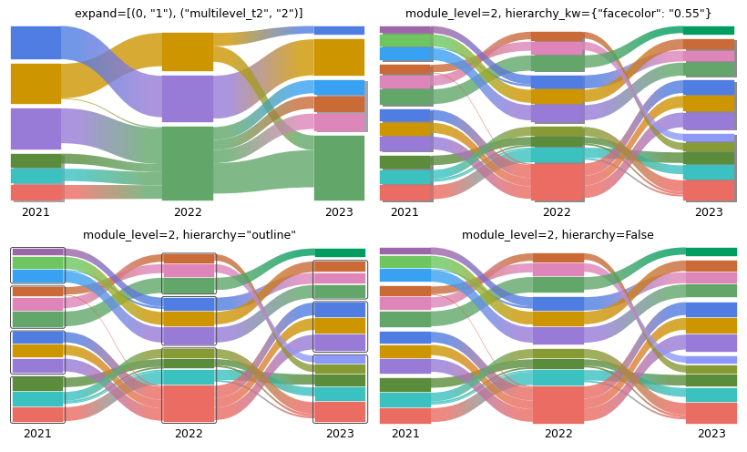
5. Module names and order#
module_names replaces a module’s label (by default its largest nodes’ names), either as
{(network, module_id): name} or as a function of an alluvial.ModuleInfo. module_order puts modules at given
positions, bottom to top; ... stands for the unlisted modules. Networks are addressed by index, id, or a name
given with names=.
g = alluvial.layout(ims, names=YEARS)
print({n.name: [m.id for m in n.modules] for n in g.networks})
def name_by_groups(module: alluvial.ModuleInfo):
"Name a module after the groups that hold at least a quarter of its nodes."
letters = [name[0] for name in module.node_names]
major = sorted({x for x in letters if letters.count(x) >= len(letters) / 4})
return "+".join(major) + " team" if major else None
named = alluvial.layout(
ims,
names=YEARS,
module_names=name_by_groups,
module_order={"2021": ["1", ...], 2: ["1", ..., "3"]},
)
first, last = named.networks[0], named.networks[2]
print([(m.id, m.name) for m in first.modules])
lowest = lambda net: max(net.modules, key=lambda m: m.y).id # noqa: E731 (y grows downwards)
highest = lambda net: min(net.modules, key=lambda m: m.y).id # noqa: E731
assert lowest(first) == "1" and lowest(last) == "1" and highest(last) == "3"
assert sorted(m.name for m in last.modules) == ["A team", "B team", "C+D team"]
fig, axs = plt.subplots(1, 2, figsize=(10, 2.8), layout="constrained")
alluvial.draw(g, axs[0])
axs[0].set_title("node-name labels, flow order", fontsize="medium")
alluvial.draw(named, axs[1])
axs[1].set_title("module_names + module_order", fontsize="medium")
fig.canvas.draw()
drawn = {t.get_text() for t in alluvial.get_artists(axs[1]).module_labels if t.get_visible()}
assert {"A team", "C+D team"} <= drawn # a name replaces the node-name label
{'2021': ['4', '1', '2', '3'], '2022': ['4', '2', '3', '1'], '2023': ['3', '2', '1']}
[('1', 'A team'), ('4', 'D team'), ('2', 'B team'), ('3', 'C team')]
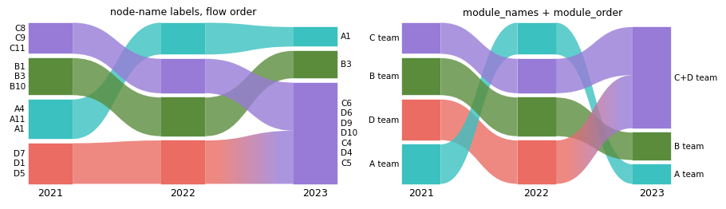
A dict works the same way and wins for the modules it names: module_names={("2021", "1"): "Core"}. Names are
drawn on the first and last network only, as in the web app; the middle ones are kept in ModuleGeometry.name.
g = alluvial.layout(ims, names=YEARS, module_names={("2021", "1"): "Core", (1, "1"): "Middle"})
assert next(m for m in g.networks[0].modules if m.id == "1").name == "Core"
assert next(m for m in g.networks[1].modules if m.id == "1").name == "Middle"
6. Drawing#
6.1 Axes, fonts and figure sizes#
draw(geometry, ax) fills any axes, also in a grid with layout="constrained". Every text size follows
rcParams["font.size"] (module labels "small", network names "medium") and the family follows font.family, so a paper’s font settings apply
as they are. Without ax=, plot/draw make a figure sized by its content: taller with more modules (2 to 6 in), wider
with more networks and longer labels.
with plt.rc_context({"font.family": "serif", "font.size": 7}):
fig, (left, right) = plt.subplots(1, 2, figsize=(7, 2.2), layout="constrained")
alluvial.plot(ims, ax=left, names=YEARS)
alluvial.plot(ims, ax=right, names=YEARS, fontsize=5, network_fontsize=8, text_kw={"family": "monospace"})
art = alluvial.get_artists(left)
small = mpl.font_manager.font_scalings["small"] # 0.833
assert art.network_labels[0].get_fontsize() == 7 and art.module_labels[0].get_fontsize() == 7 * small
assert art.module_labels[0].get_family() == ["serif"]
assert alluvial.get_artists(right).network_labels[0].get_fontsize() == 8
sizes = {}
for what, networks in {"3 networks, 4 modules": ims, "2 networks, 2 modules": [{"a": 1, "b": 2}] * 2}.items():
ax = alluvial.plot(networks) # its own figure
sizes[what] = w, h = ax.figure.get_size_inches()
print(f"{what}: {w:.1f} x {h:.1f} in")
plt.close(ax.figure)
assert all(2 <= h <= 6 for w, h in sizes.values())
assert sizes["3 networks, 4 modules"][0] > sizes["2 networks, 2 modules"][0] # wider with more networks
3 networks, 4 modules: 3.4 x 2.1 in
2 networks, 2 modules: 2.3 x 2.0 in
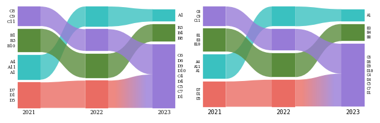
6.2 Label options#
module_labels/network_labels switch labels off, max_label_lines caps the names per module,
max_label_width truncates long lines (points, "auto" or None), avoid_label_overlap=False reproduces the
web app’s overlapping labels, label_pad sets the gap, label_colors colors names by their group, and
label_kw/network_label_kw style each kind of text.
g = alluvial.layout(ims, names=YEARS, highlight=groups)
fig, axs = plt.subplots(1, 3, figsize=(10, 2.8), layout="constrained", width_ratios=[1, 1.3, 1])
alluvial.draw(g, axs[0], max_label_lines=1, label_colors=False)
axs[0].set_title("max_label_lines=1, label_colors=False", fontsize="small")
long = alluvial.layout(ims, names=YEARS, module_names=lambda m: f"a long name for module {m.id}")
alluvial.draw(
long, axs[1], max_label_width=60, label_pad=8, avoid_label_overlap=False, label_kw={"style": "italic"}
)
axs[1].set_title("max_label_width=60, label_pad=8", fontsize="small")
alluvial.draw(g, axs[2], module_labels=False, network_label_kw={"weight": "bold", "color": "0.3"})
axs[2].set_title("module_labels=False", fontsize="small")
fig.canvas.draw() # labels are fitted at draw time
visible = lambda ax: [t for t in alluvial.get_artists(ax).module_labels if t.get_visible()] # noqa: E731
assert all("\n" not in t.get_text() for t in visible(axs[0]))
assert any(t.get_text().endswith("…") for t in visible(axs[1]))
assert alluvial.get_artists(axs[2]).module_labels == []
assert alluvial.get_artists(axs[2]).network_labels[0].get_fontweight() == "bold"
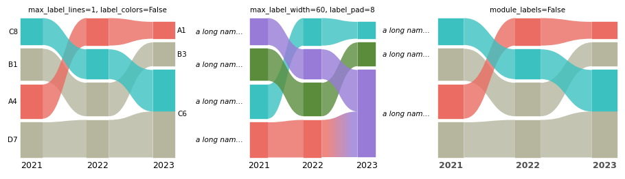
6.3 Palettes, colormaps, gradients and styles#
palette= recolors at draw time: a list, a matplotlib colormap name or a Colormap (qualitative maps are used
as they are, continuous ones are sampled). default_color sets the gray. Streamlines between differently
colored modules get a horizontal gradient (gradient=False uses the left color). streamline_alpha,
edgecolor/linewidth, module_kw, streamline_kw and hierarchy_kw style the shapes.
g = alluvial.layout(ims, names=YEARS, colors="module_id")
fig, axs = plt.subplots(2, 3, figsize=(10, 4.6), layout="constrained")
styles = {
'palette="tab10"': dict(palette="tab10"),
"palette=Set2 Colormap": dict(palette=mpl.colormaps["Set2"]),
"palette=list, default_color": dict(
palette=["#264653", "#2a9d8f", "#e9c46a", "#e76f51"], default_color="0.8"
),
"gradient=False": dict(gradient=False),
"streamline_alpha=0.4, hatch": dict(
streamline_alpha=0.4, module_kw={"hatch": "///", "edgecolor": "white"}
),
"edges + streamline_kw": dict(
edgecolor="black",
linewidth=0.6,
streamline_kw={"edgecolor": "white", "linewidth": 0.8},
gradient=False,
),
}
for ax, (title, kw) in zip(axs.flat, styles.items()):
alluvial.draw(g, ax, module_labels=False, network_labels=False, **kw)
ax.set_title(title, fontsize="small")
tab10 = mpl.colormaps["tab10"].colors
first = alluvial.get_artists(axs[0, 0]).modules[0]
assert tuple(first.get_facecolor()[:3]) == tuple(tab10[g.networks[0].modules[0].highlight_index])
images = [a for a in alluvial.get_artists(axs[0, 0]).streamlines if isinstance(a, mpl.image.AxesImage)]
assert images and not [
a for a in alluvial.get_artists(axs[1, 0]).streamlines if isinstance(a, mpl.image.AxesImage)
]
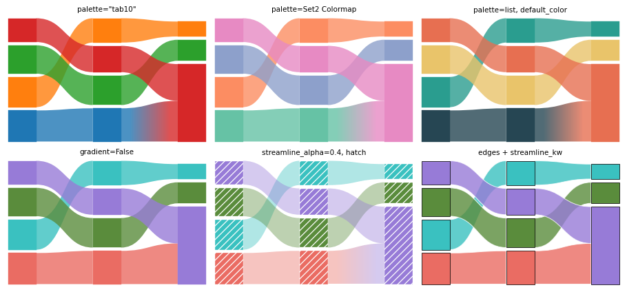
6.4 Restyling with get_artists#
get_artists(ax) returns the drawn artists (modules, streamlines, module_labels, network_labels,
outlines, legend) for changes after the fact. Each artist carries a gid like module:<network>:<module>:<group>,
which SVG output keeps as the element id.
fig, ax = plt.subplots(figsize=(6, 2.6), layout="constrained")
alluvial.plot(ims, ax=ax, names=YEARS, module_level=1)
art = alluvial.get_artists(ax)
for text in art.network_labels:
text.set_fontweight("bold")
for patch in art.modules:
if patch.get_gid().startswith("module:net2:"): # the last network
patch.set_edgecolor("black")
patch.set_linewidth(1)
print(len(art.modules), "module groups,", len(art.streamlines), "streamlines; e.g.", art.modules[0].get_gid())
assert art.geometry.networks[0].id == "net0" and art.modules[0].get_gid().startswith("module:net0:")
assert all(a.get_gid().startswith("streamline:") for a in art.streamlines)
11 module groups, 8 streamlines; e.g. module:net0:4:0
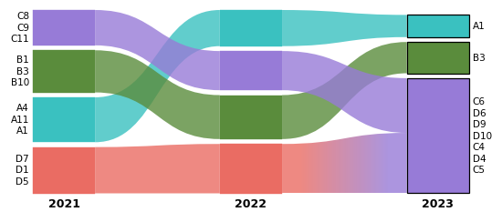
6.5 Saving figures: PNG, PDF, SVG and rasterized#
Figures save like any matplotlib figure, and stay vector in PDF and SVG (gradients are small images clipped to
the streamline). For very large diagrams, rasterized=True rasterizes the shapes and keeps the text as vector.
fig, ax = plt.subplots(figsize=(5, 2.4), layout="constrained")
alluvial.plot(ims, ax=ax, names=YEARS)
for ext in ("png", "pdf", "svg"):
fig.savefig(OUT / f"figure.{ext}")
plt.close(fig)
svg = (OUT / "figure.svg").read_text()
assert 'id="network-label:net0"' in svg and 'id="streamline:' in svg
assert (OUT / "figure.pdf").read_bytes().startswith(b"%PDF") and (OUT / "figure.png").stat().st_size > 10_000
fig, ax = plt.subplots(figsize=(5, 2.4), layout="constrained")
alluvial.plot(ims, ax=ax, names=YEARS, rasterized=True, gradient=False)
fig.savefig(OUT / "raster.svg", dpi=150)
plt.close(fig)
raster = (OUT / "raster.svg").read_text()
assert "<image" in raster and "network-label:net0" in raster # shapes as an image, text as vector
print({p.name: p.stat().st_size for p in sorted(OUT.glob("*.*")) if p.suffix in (".png", ".pdf", ".svg")})
{'figure.pdf': 9683, 'figure.png': 15820, 'figure.svg': 20277, 'raster.svg': 36280}
7. Geometry access#
layout returns an AlluvialGeometry of frozen dataclasses in the web app’s SVG coordinates (y grows
downwards): networks with their modules (each with color groups and a label), streamlines and the hierarchy
outlines. It needs no matplotlib, so it also feeds other renderers. to_dict() gives plain JSON-ready data, and
AlluvialGeometry.from_dict reads it back.
code = (
"import sys, alluvial; g = alluvial.layout([sys.argv[1]]);"
"print(len(g.networks[0].modules), 'matplotlib' in sys.modules)"
)
out = subprocess.run(
[sys.executable, "-c", code, str(ML[0])], capture_output=True, text=True, check=True
).stdout
print("layout in a fresh process -> modules, matplotlib imported:", out.strip())
assert out.split() == ["4", "False"]
g = alluvial.layout(ML, names=YEARS, module_level=2)
data = g.to_dict()
text = json.dumps(data)
assert alluvial.AlluvialGeometry.from_dict(json.loads(text)) == g
print(sorted(data), f"{len(text) / 1000:.0f} kB of JSON")
m = g.networks[0].modules[0]
s = g.streamlines[0]
print(
m.id,
m.level,
round(m.flow, 3),
[round(v, 1) for v in (m.x, m.y, m.width, m.height)],
m.largest_leaf_names[:3],
)
print(s.id, s.left, s.right, s.svg_path()[:60], "...")
assert abs(sum(grp.height for grp in m.groups) - m.height) < 1e-9
assert s.path()[0][1][0] == g.networks[s.left[0]].x + g.networks[s.left[0]].width
layout in a fresh process -> modules, matplotlib imported: 4 False
['height', 'highlight_labels', 'networks', 'options', 'palette', 'streamlines', 'width'] 39 kB of JSON
1:1 2 0.1 [0.0, 548.2, 80.0, 51.8] ('m50', 'm47', 'm49')
multilevel_t0_module1:1_group0_right--multilevel_t1_module1:2_group1_left (0, '1:1', 0) (1, '1:2', 1) M80,596.0122694042943C160,596.0122694042943,160,469.44373890 ...
The coordinates are enough for a renderer of your own. Here are the modules as plain matplotlib bars:
def css_rgb(color):
"A palette entry is a CSS color, '#rrggbb' or 'rgb(r, g, b)'; matplotlib reads only the first."
if color.startswith("rgb("):
return tuple(int(v) / 255 for v in color[4:-1].split(","))
return color
fig, ax = plt.subplots(figsize=(5, 2.2), layout="constrained")
for net in g.networks:
for mod in net.modules:
color = css_rgb(g.palette[mod.highlight_index]) if mod.highlight_index >= 0 else "0.7"
ax.bar(
mod.x,
mod.height,
width=mod.width,
bottom=g.height - mod.y - mod.height,
align="edge",
color=color,
)
ax.set_title("modules from AlluvialGeometry with ax.bar", fontsize="medium")
ax.set_axis_off()
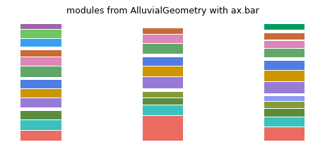
8. Save and load#
save_diagram(networks, path, **layout_kwargs) lays out the networks like layout and saves the diagram in the
web app’s “Download diagram” format: “alluvial network files” (formatVersion 1), one Infomap-JSON file per network
with the colors, expanded modules, module names, custom module orders, the layout options and the color scheme
in an alluvial block. It writes a zip by default, a directory of loose files with loose=True, or one .json
for a one-network diagram. read loads them back in saved order and layout restores the same diagram: the same
modules, order, colors, names, options and network names. Three details differ: the coordinates agree up to float
rounding (the reload sums the module flows in another order, about 1e-13 px); for the same reason, node-name labels
can list nodes of exactly equal flow in another order; and the network ids are the saved file names unless ids=
sets them. Saving a reloaded diagram again reproduces it bit for bit.
kwargs = dict(
names=YEARS,
module_level=[1, 2, 2],
scheme="Tableau10",
module_names={("2021", "1"): "Core"},
module_order={"2021": ["2", ...]},
margin_exponent=5,
module_width=60,
)
original = alluvial.layout(ML, **kwargs)
zip_saved = alluvial.save_diagram(ML, OUT / "diagram.zip", **kwargs)
dir_saved = alluvial.save_diagram(ML, OUT / "diagram", loose=True, **kwargs)
print(zip_saved.name, zipfile.ZipFile(zip_saved).namelist())
print(dir_saved.name, sorted(p.name for p in dir_saved.iterdir()))
reloaded = alluvial.read(zip_saved)
ids = [n.id for n in original.networks]
print([f.id for f in reloaded], "->", ids)
assert [f.name for f in reloaded] == YEARS
restored = alluvial.layout(reloaded, ids=ids)
assert close(restored, original, labels=False) # everything restored, up to float rounding
assert [[(m.id, m.name, m.highlight_index) for m in n.modules] for n in restored.networks] == [
[(m.id, m.name, m.highlight_index) for m in n.modules] for n in original.networks
]
assert restored.options == original.options and restored.palette == original.palette
assert same(alluvial.layout([zip_saved]), alluvial.layout([dir_saved])) # zip and loose files agree
shuffled = sorted(dir_saved.iterdir(), reverse=True)
assert [f.name for f in alluvial.read(shuffled)] == YEARS # read sorts the files of one save into saved order
assert same(alluvial.layout(alluvial.read(shuffled)), alluvial.layout([dir_saved]))
again = alluvial.save_diagram(reloaded, OUT / "again.zip") # a reloaded diagram saves and reloads unchanged
assert same(alluvial.layout([again]), alluvial.layout([zip_saved]))
block = reloaded[0].alluvial
print(
{k: block[k] for k in ("format", "formatVersion", "generator")},
"options:",
list(block["diagram"]["options"])[:5],
)
assert block["format"] == "alluvial-network" and block["formatVersion"] == 1
assert block["generator"] == f"alluvial (Python) {alluvial.__version__}"
diagram.zip ['00_2021.json', '01_2022.json', '02_2023.json']
diagram ['00_2021.json', '01_2022.json', '02_2023.json']
['00_2021', '01_2022', '02_2023'] -> ['multilevel_t0', 'multilevel_t1', 'multilevel_t2']
{'format': 'alluvial-network', 'formatVersion': 1, 'generator': 'alluvial (Python) 0.7.0'} options: ['height', 'marginExponent', 'zeroMargins', 'moduleWidth', 'streamlineFraction']
Keywords given to layout win over the stored values, and restore_state=False loads the files as plain Infomap
JSON (keeping their colors and expanded modules, but not the options, order and names). A single network can be
saved as one .json.
wider = alluvial.layout([zip_saved], module_width=100)
assert wider.networks[0].width == 100 and wider.palette == original.palette
plain = alluvial.layout([zip_saved], restore_state=False)
assert plain.options == alluvial.LayoutOptions() and plain.networks[0].modules[0].name == ""
single = alluvial.save_diagram([ims[0]], OUT / "one.json", names=["2021"])
assert close(alluvial.layout([single], ids=["net0"]), alluvial.layout([ims[0]], names=["2021"]), labels=False)
Opening in the web app. Go to mapequation.org/alluvial, choose “Load
networks” and drop the zip (or all loose files) there. The web app shows the same picture, ready to fine-tune by
hand: move, name and recolor modules, change options, then “Download diagram” again. Those downloads are the same
format and load back here with alluvial.read/layout. The files are also plain Infomap JSON, which any
Infomap-JSON reader can use. (The 2019 saved-diagram format, one .json with all networks, is no longer read; see
the next section.)
9. Error handling#
alluvial raises where a diagram would otherwise be silently wrong, with a message that says what to do. Each
case below is a typical mistake; the check asserts the message.
def message(fn, error=Exception):
"Run fn, assert it raises `error`, and return the message."
try:
fn()
except error as e:
return str(e)
raise AssertionError(f"{fn} raised no {error.__name__}")
not_run = infomap.Infomap(silent=True)
legacy = {"version": "0.3.0", "networks": []} # the 2019 web-app format
mistakes = {
"Infomap not run": (lambda: alluvial.layout([not_run]), ValueError, "call im.run() first"),
"a missing file": (lambda: alluvial.layout(["nope.tree"]), FileNotFoundError, "no such network file"),
"one network, not in a list": (lambda: alluvial.layout(ML[0]), TypeError, "wrap a single network in a list"),
"a typo in a keyword": (lambda: alluvial.layout(ML, flow_treshold=0.1), TypeError, "did you mean 'flow_threshold'"),
"an option out of range": (lambda: alluvial.layout(ML, flow_threshold=1.5), ValueError, "flow_threshold must be in [0, 1)"),
"an unknown alignment": (lambda: alluvial.layout(ML, vertical_align="top"), ValueError, "vertical_align must be one of"),
"colors and highlight": (lambda: alluvial.layout(ML, colors="nodes", highlight={"a": [1]}), ValueError, "mutually exclusive"),
"an unknown scheme": (lambda: alluvial.layout(ML, scheme="Sunset"), ValueError, "unknown color scheme 'Sunset'"),
"color_network, not nodes": (lambda: alluvial.layout(ML, color_network=1), ValueError, 'requires colors="nodes"'),
"layer colors, no layers": (lambda: alluvial.layout(ML, colors="layer"), ValueError, "needs a multilayer network"),
"a node in two groups": (lambda: alluvial.layout(ML, highlight={"a": [1], "b": [1]}), ValueError, "listed under two highlight labels"),
"expand a missing module": (lambda: alluvial.layout(ML, expand=[(0, "9")]), ValueError, "no module '9'"),
"order a sub-module": (lambda: alluvial.layout(ML, module_order={0: ["1:1"]}), ValueError, "expand its parent module '1' first"),
"split a flat network": (lambda: alluvial.read(ML[0], split_layers=True), ValueError, "is not multilayer"),
"a NaN flow": (lambda: alluvial.read(DATA / "nan_t0.tree"), ValueError, "has no finite flow (NaN)"),
"a 2019 saved diagram": (lambda: alluvial.read(legacy), ValueError, "the 2019 saved-diagram format is no longer supported"),
"save geometry, not networks": (lambda: alluvial.save_diagram(original, OUT / "x.zip"), TypeError, "pass the networks"),
"many networks to .json": (lambda: alluvial.save_diagram(ML, OUT / "x.json"), ValueError, "only for a diagram of one network"),
"draw networks, not geometry": (lambda: alluvial.draw(ML), TypeError, "use alluvial.plot(networks, ax=ax)"),
} # fmt: skip
for what, (fn, error, expected) in mistakes.items():
text = message(fn, error)
assert expected in text, (what, text)
print(f"{what:28} {error.__name__}: {text[:90]}")
Infomap not run ValueError: the Infomap object has not been run; call im.run() first
a missing file FileNotFoundError: [Errno 2] no such network file: 'nope.tree'
one network, not in a list TypeError: networks must be a sequence of networks, got PosixPath; wrap a single network in a list, e
a typo in a keyword TypeError: layout() got unexpected keyword argument(s) 'flow_treshold' (did you mean 'flow_threshold'
an option out of range ValueError: flow_threshold must be in [0, 1), got 1.5
an unknown alignment ValueError: vertical_align must be one of ('bottom', 'justify'), got 'top'
colors and highlight ValueError: colors and highlight are mutually exclusive; pass only one of them
an unknown scheme ValueError: unknown color scheme 'Sunset'; did you mean 'Set3', 'Set2', 'Set1'? (alluvial.SCHEMES list
color_network, not nodes ValueError: color_network requires colors="nodes", got colors='module_id'
layer colors, no layers ValueError: colors='layer' needs a multilayer network (nodes with layer ids)
a node in two groups ValueError: node '1' is listed under two highlight labels, 'a' and 'b'
expand a missing module ValueError: no module '9' in network 'multilevel_t0'
order a sub-module ValueError: module_order: no module '1:1' in network 'multilevel_t0'; expand its parent module '1' fir
split a flat network ValueError: network 'multilevel_t0.tree' is not multilayer (its first node has no layer id), so it can
a NaN flow ValueError: nan_t0.tree: node 1 has no finite flow (NaN)
a 2019 saved diagram ValueError: the 2019 saved-diagram format is no longer supported; use alluvial 0.4 to convert
save geometry, not networks TypeError: networks is an AlluvialGeometry, which is already laid out; draw it with alluvial.draw (to
many networks to .json ValueError: save_diagram writes a .json file only for a diagram of one network, got 3 networks; pass a
draw networks, not geometry TypeError: draw() takes the AlluvialGeometry returned by alluvial.layout, got list; to lay out and dr
Some mistakes only warn, because the diagram is still valid: a module_level deeper than a network’s hierarchy,
highlight identifiers that match no node, and a legend without highlight groups.
with warnings.catch_warnings(record=True) as caught:
warnings.simplefilter("always")
alluvial.layout(ML, module_level=5)
alluvial.layout(ML, highlight={"typo": [9999]})
fig, ax = plt.subplots()
alluvial.draw(alluvial.layout(ML), ax)
assert alluvial.legend(ax) is None
plt.close(fig)
texts = [str(w.message) for w in caught]
for t in texts:
print("warning:", t[:110])
assert any("module_level is deeper than the module tree" in t for t in texts)
assert any("match no node" in t for t in texts)
assert any("no highlight labels to show in a legend" in t for t in texts)
warning: module_level is deeper than the module tree of 'multilevel_t0.tree' (module_level 5, deepest level 2), 'multil
warning: highlight: 1 of 1 identifiers match no node in any network (e.g. '9999')
warning: no highlight labels to show in a legend; use layout(..., highlight=...)
10. Performance notes#
The engine is pure Python, so the cost grows with the number of nodes and visible modules. The four science
citation networks (7170 to 7940 nodes, 350 to 470 sub-modules each at level 2) show typical times. Reading is
fast; the layout dominates, and each layout call builds the diagram from scratch, so lay out once and draw the
geometry as often as you like. module_order and module_level cost one layout however many modules they move
or expand (earlier versions made one layout per moved module: reversing these 40 modules took 85 s).
SCIENCE = sorted(DATA.glob("science*.stree"))
def timed(label, fn):
start = time.perf_counter()
value = fn()
seconds = time.perf_counter() - start
print(f"{label:46} {seconds:5.1f} s")
return value, seconds
science, t_read = timed("read 4 science networks", lambda: [alluvial.read(p) for p in SCIENCE])
g1, t1 = timed(
"layout, top modules", lambda: alluvial.layout(science, names=["2001", "2003", "2005", "2007"])
)
g2, t2 = timed("layout, module_level=2", lambda: alluvial.layout(science, module_level=2))
first40 = [m.id for m in g2.networks[0].modules][:40]
g3, t3 = timed(
"layout, module_level=2 + reverse 40 modules",
lambda: alluvial.layout(science, module_level=2, module_order={0: first40[::-1]}),
)
print([len(n.modules) for n in g2.networks], "visible modules at level 2")
order = [m.id for m in sorted(g3.networks[0].modules, key=lambda m: -m.y)][:40] # bottom to top
assert order == first40[::-1]
assert t3 < t2 + 10 # the 40 moves cost about one extra layout, not 40
fig, ax = plt.subplots(figsize=(7, 3), layout="constrained")
alluvial.draw(g1, ax, max_label_lines=3)
ax.set_title("science citation networks, 2001-2007", fontsize="medium")
read 4 science networks 0.8 s
layout, top modules 2.5 s
layout, module_level=2 6.0 s
layout, module_level=2 + reverse 40 modules 6.0 s
[429, 386, 352, 471] visible modules at level 2
Text(0.5, 1.0, 'science citation networks, 2001-2007')
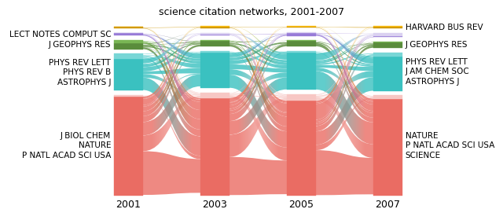
For large diagrams also consider flow_threshold (fewer visible modules make every step cheaper) and
rasterized=True for compact PDF/SVG files.
That was every public capability. help(alluvial.layout), help(alluvial.draw) and the README have the details
of each keyword.
shutil.rmtree(OUT) # remove the files this notebook wrote